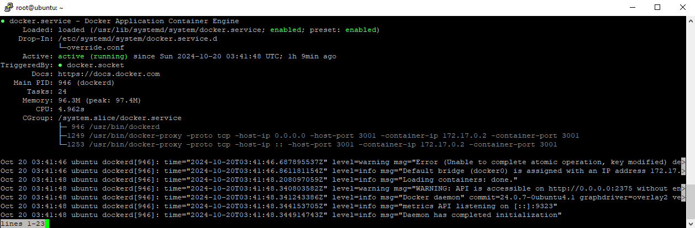
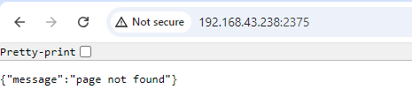
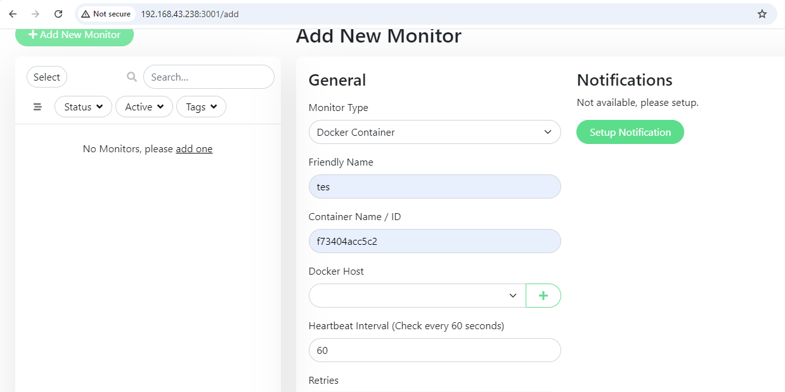
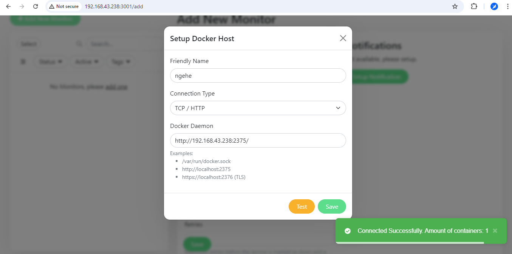
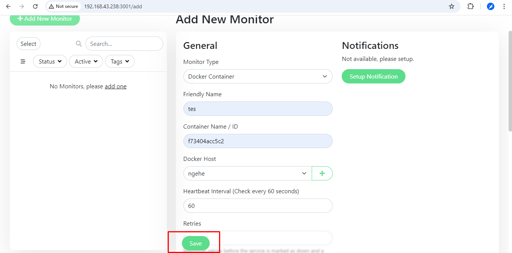
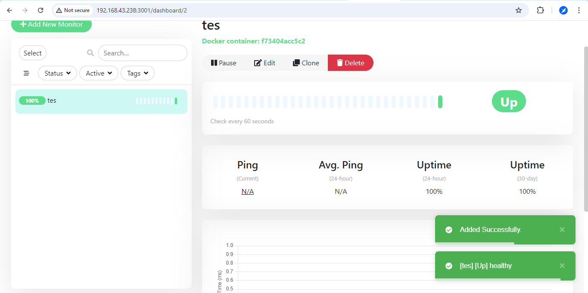

Cara enable port external Docker
Halo, bersama orang bego lagi kali ini gue ber-eksperimen pengen enable port eksternalnya docker, di kasus ini gue pengen monitoring container docker lewat uptime kuma, tapi disini gue nyoba di Ubuntu Server 24.04.1 di virtualbox aja karena gue masih bloon aja nih.
Oke, kanjut lanjut
Lesgo
Anggap ubuntu servernya udah konek internet dan udah install docker dan udah di pasang uptime kuma, bikin file daemon.json di /etc/docker/
root@ubuntu:~# cat /etc/docker/daemon.json
{
"hosts": ["tcp://0.0.0.0:2375", "unix:///var/run/docker.sock"],
"metrics-addr": "0.0.0.0:9323",
"experimental": true
}
root@ubuntu:~#
Yang port 9323 itu port docker metrics, terserah kalo ga mau di pake di comment aja
Terus bikin folder /etc/systemd/system/docker.service.d/ terus bikin file override.conf
root@ubuntu:~# cat /etc/systemd/system/docker.service.d/override.conf [Service] ExecStart= ExecStart=/usr/bin/dockerd root@ubuntu:~#
Reload daemon, systemctl daemon-reload
Abis itu restart docker, systemctl restart docker
Kalo berhasil ga ada error kek gini hasilnya cok:


Testing di Uptime Kuma
Coba tes di uptime kuma, kek gini

Anggap kita mau monitoring kontainernya dengan id kontainer f73404acc5c2
Di bagian Docker Host, klik tanda +

Isi namanya bebas, terus pilih Connection Type nya TCP/HTTP, isi Docker Daemonnya http://192.168.43.238:2375/, abis itu klik test, kalo berhasil kek di gambar terus klik save
Klik save

Tampilannya kek gini

Silly Me
Gue dah coba di VPS gue, tapi gagal